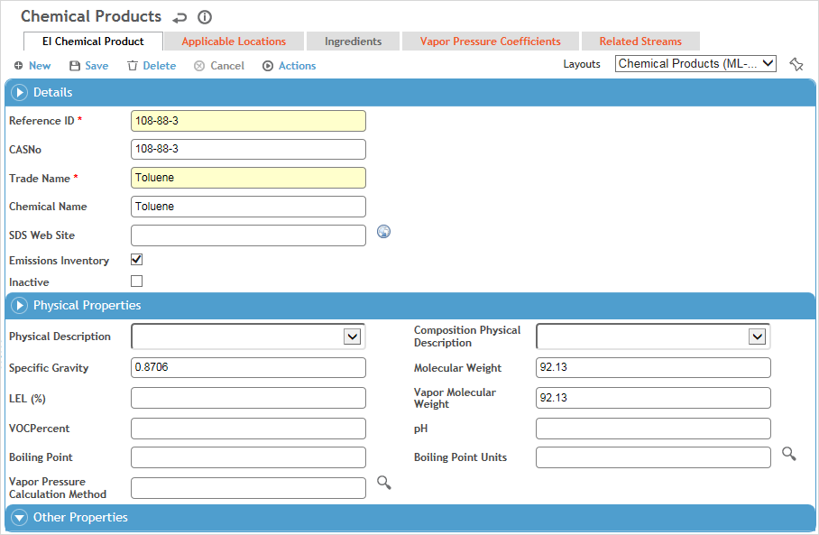

In the Emissions Inventory menu click Chemicals. This list only shows chemicals that are flagged for Emissions Inventory.
Optionally, filter the list by using the fields at the top of the list or choose Actions»Search CASNo or Actions»Search Trade and Chemical Name.
Use the Site Selector (at the top of the Emissions Inventory menu) to view just the chemicals related to a particular asset node. The assets listed in the Site Selector are derived from the streams with which the various chemicals in the full list are related.
Click a link to view details of a product, or click New to enter a new product.

Enter the Reference ID, Trade Name and Chemical Name.
To include a link to the SDS on the manufacturer’s website, enter the URL in the SDS Web Site field. A link is added to the left of the product in the list view.
You cannot delete a product unless any related inventory records are deleted. If a product is no longer in use and you want to prevent designates from adding it to their inventories, select the Inactive checkbox.
Optionally, identify the product’s Physical Properties (e.g. Physical State (liquid, gas, or solid), pH, etc.) and any Other Properties.
While a Vapor Pressure Calculation Method can be associated with a chemical, emission calculations use the Vapor Pressure Calculation Method defined in a Stream Composition record.
Click Save.
If necessary, on the Applicable Locations tab identify the location(s) that this asset applies to.
If you have added the Chemical Inventory Amount section to a custom layout, you can update the inventory amount on an existing record: choose Actions»Add a New Inventory Version.
To identify the ingredients in a product, click New on the Ingredients tab.
Select the substance from the AgentHazard look-up table, enter the Low % and High %, then click Save.
If an SDS is associated to a selected agent or product (in the AgentHazard look-up table), it will be listed on the Related SDS tab. To download the most recently imported SDS, choose Actions»Open Related SDS.
On the Vapor Pressure Coefficients tab, set up the coefficients for the calculation methods that may be used for this chemical.
Cority supports the five common types of vapor pressure calculations (Antoine’s 2 parameter equation, Antoine’s 3 parameter equation, Riedel Equation, VP vs Temperature, and RVP and ASTM Slope).
On the EI Chemical Product tab you can choose one of these to be associated with this chemical record (see Note above).
The Related Streams tab displays streams that reference this chemical, but you can also create a stream from this tab (see Creating Streams).